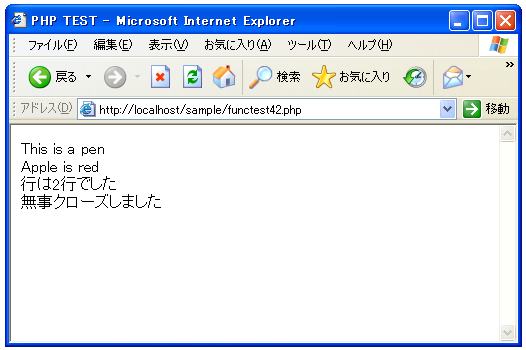

ファイルから1行読み込む(fgets, feof)
ファイルから1行分だけテキストを読み込みを行います。fgets関数を使います。
fgets string fgets(resource handle [, int length])
引数のハンドルで指定したファイルポインタから最大 length - 1 バイト読 み出し、その文字列を返します。読み出しは、length - 1 バイト読み出した か、(返り値 に含まれる)改行文字を検出したか、EOF に達したかのいずれか が起こった時点で終了します。length が指定されない場合、デフォルトは 1k または 1024 バイトとなります。 引数： handle 対象となるファイルのハンドル length 一度に読み込む最大バイト数 返り値： エラーが起こった場合、FALSE
改行が検出されるまでファイルの内容を読み込みます。改行以外でもファイルの最後まで到達したり、最大バイト数を指定している時はそのバイト数に達した段階で終了します。
1行読み込んだ後に再度この関数を実行すると、ファイルポインタは前回実行した際に終わった改行部分の次に設定されています。よって再度この関数を実行すると前回の関数で読みこんだ行の次の位置から読み込みを開始します。その為、ファイルの最後に到達するまでこの関数を繰り返し実行することで1行ずつ全てのテキストを読み込む事ができます。
そこで今後はファイルポインタが行の最後に来ているかどうかを判別する方法を見てみます。feof関数を使います。
feof bool feof(resource handle)
ファイルポインタがファイル終端に達しているかどうか調べます。
引数：
handle 対象となるファイルのハンドル
返り値：
ファイルポインタがEOF(End of File)に達しているかエラーならTRUE、
それ以外ならFALSE
以上のことから、fgets及びfeofを使ってファイルから1行ずつ全ての行を読み込むには下記のようになります。
$fp = fopen('filename', 'r');
if ($fp){
if (flock($fp, LOCK_SH)){
while (!feof($fp)) {
$buffer = fgets($fp);
print($buffer);
}
flock($fp, LOCK_UN);
}else{
print('ファイルロックに失敗しました');
}
}
fclose($fp);
サンプルプログラム
では実際に試して見ます。
<html>
<head><title>PHP TEST</title></head>
<body>
<?php
$fp = fopen('sample.txt', 'r');
$count = 0;
if ($fp){
if (flock($fp, LOCK_SH)){
while (!feof($fp)) {
$buffer = fgets($fp);
print($buffer.'<br>');
$count++;
}
print('行は'.$count.'行でした<br>');
flock($fp, LOCK_UN);
}else{
print('ファイルロックに失敗しました');
}
}
$flag = fclose($fp);
if ($flag){
print('無事クローズしました');
}else{
print('クローズに失敗しました');
}
?>
</body>
</html>
読み込みの対象となる"sample.txt"は下記のようなファイルです。
サンプルプログラムをWWWサーバに設置しブラウザ経由で見ると下記のように表示されます。
上記で3行となっているのは、テキストファイルの2行目が改行で終わっていて3行目には何もないのですけどそこにEOFがあるためです。例えば"sample.txt"を下記のようにすることで結果は異なります。
改めてサンプルプログラムをWWWサーバに設置しブラウザ経由で見ると下記のように表示されます。

( Written by Tatsuo Ikura )

著者 / TATSUO IKURA
初心者～中級者の方を対象としたプログラミング方法や開発環境の構築の解説を行うサイトの運営を行っています。